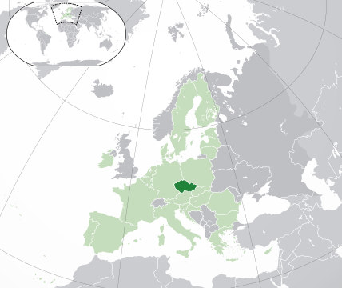
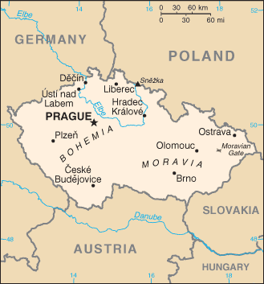
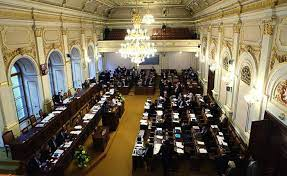
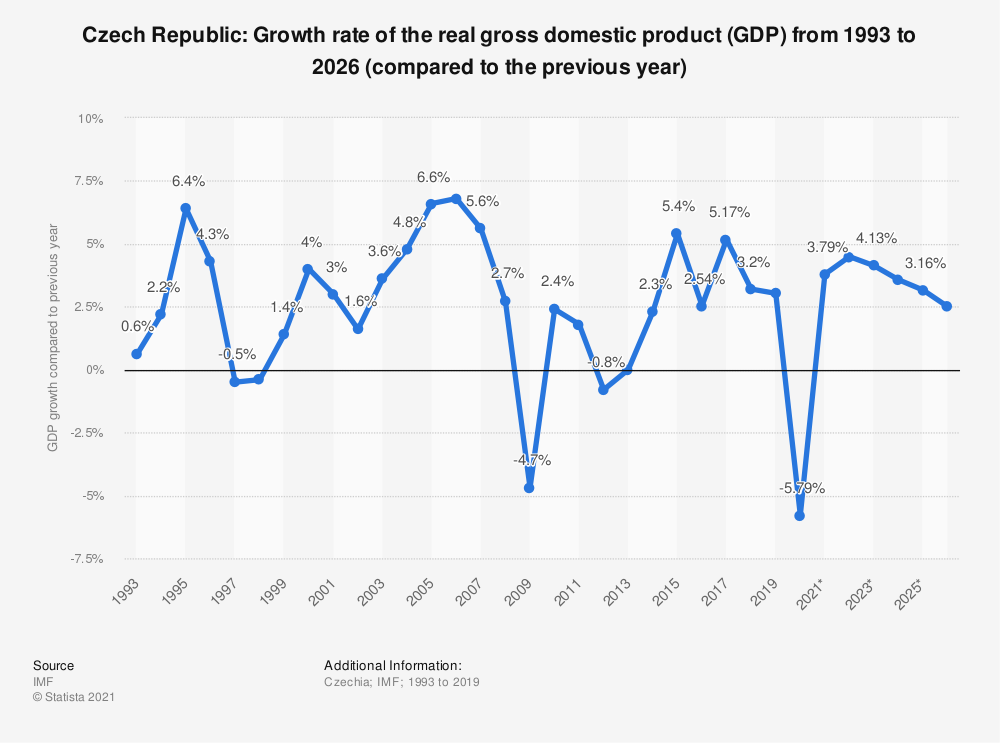

Hemen, Txedakiako Errepublikari buruzko informazio orokorra erakusten da.
Txekiar Errepublika (Česká republika, txekieraz) Europar Batasunean (EU) parte hartzen duten herrialdetariko bat da, Europaren erdialdean dagoena eta lau herrialdeekin egiten du muga: Alemania, Eslovakia, Plonia eta Austriarekin.
|  |  |
Haren hiriburua Praga da eta hiru eskualde historikoz osatuta dago: Bohemia, Moravia eta Txekiar Silesia; 78.866 kilometro koadroko eremua du, eta 10,5 milioi biztanle.
Politikari begira:
Txekia ordezkaritza bidezko demokrazia parlamentarioa da. Presidentea da estatuburua, eta lehen ministroa gobernuburua. Parlamentuak (txekieraz: Parlament České republiky) bi ganbera ditu: Diputatuen Ganbera (txekieraz: Poslanecká sněmovna), 200 eserleku dituena, eta Senatua (txekieraz: Senat), 81 eserlekurekin.
|  |
Ekonomiaz hitz eginez:
Lehen sektorean: Txekia Europako herri industrializatuenetako bat izan da XIX. mendearen erdialdez geroztik. Moraviako eta Bohemiako lur behereetan, laboreak eta azukre erremolatxa egiten dira batez ere, eta behi eta txerri hazkuntzak garrantzi handia du. Bohemiako ibarretan, berriz, zekalea eta patata egiten dira. Oloa pentsutarako erabiltzen da, eta garagarra garagardoa egiteko, batez ere. Izan ere, Txekia munduko garagardo ekoizle handienetakoa da. Laboreez gainera, azukre erremolatxa, patata, tabakoa, kalamua eta lihoa egiten dira, eta baita mahatsa eta fruta ere, baina lekurik beroenetan bakarrik. Abere hazkuntzak ere garrantzia handia du, lurraldeko larre eremu eta pentsu produkzio handiei esker. Basoek lurraldearen laurdena hartzen dute, eta paper eta altzari fabrikak hornitzen dituzte. Baina Txekiaren aberastasun handienetako bat bere mea baliabideak dira: harrikatza, lignitoa, grafitoa eta uranioa Bohemian, eta ikatza Moravian. Meatoki nagusiak Bohemiako iparraldean eta batez ere Ostravako ikatz arroan daude, Silesian. Gai horiez gainera, gas naturala, burdina, urrea, zilarra eta mea erradioaktiboak ustiatzen dira.
Industrian: Industriak barne produktu gordinaren % 37,3 sortzen du[7]. Bi sektore nabarmentzen dira guztien gainetik: ehungintza, iparraldean, eta siderurgia, Silesian eta Bohemian. Eraikuntza mekanikoen sektorea ere oso aurreratua dago: zentral nuklearretako osagaiak egiten dira Pilsenen, motorrak Brnon, gerrarako makinak eta tresnak Vitkovicen. Industria kimikoa ere oso aurreratua dago, Ostravako eskualdean batez ere, eta garrantzi handikoa da, baita ere, nekazaritzako produktuen eraldatze industria, batez ere azukregintza eta garagardogintza (Praga eta Pilsenen batez ere). Azkenik, oinetako eta larruzko produktuen fabrikak eta Bohemiako beira industria ospetsua aipatu behar dira.
Turismoan: Turismoa herrialdearen diru iturri nagusietako bat bihurtu da. Ekialdeko Europako beste herrialde batzuetan ez bezala, Errumanian edo Jugoslavian, esate baterako, Txekian bakean gauzatu ziren erreforma demokratikoa eta herrialdearen zatiketa, eta horri esker turismoak ez zuen batere indarrik galdu, alderantziz baizik. Praga da, bertako kultura tradizioagatik eta hiriaren bikaintasunarengatik, turista gehien erakartzen duen lekua.
|  |